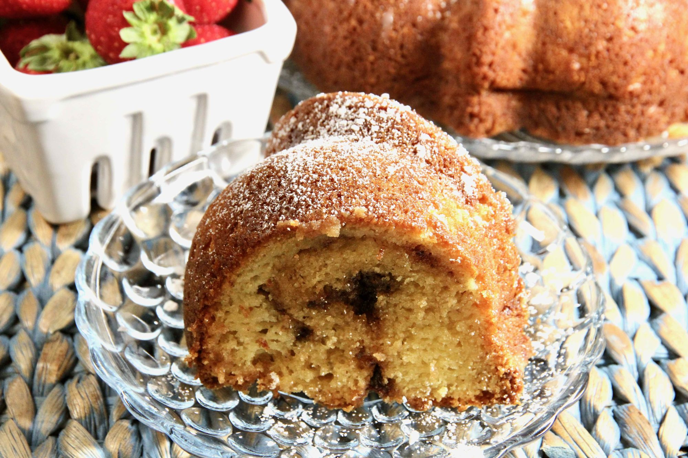

Toffee Bundt Cake

Description
This is almost as easy as a dump cake. It's wonderfully tasty and frequently demanded by my friends.
Ingredients
- 1 package yellow cake mix
- 1 package vanilla instant pudding mix
- 2/3 cup vegetable oil
- 1/3 cup white sugar
- 1/3 cup water
- 4 large eggs, beaten
- 1 container sour cream
- 1 cup chocolate-coated toffee bits
- 1/4 cup powdered sugar, ot to taste
Steps:
- Preheat the oven to 350 degrees F (175 degrees C). Grease and flour a 10-inch Bundt® pan.
- Mix cake mix, pudding mix, vegetable oil, sugar, water, and eggs together in a large mixing bowl until smooth. Fold in sour cream; batter will be very thick.
- Pour 1/2 of the batter into the prepared pan. Sprinkle 1/2 of the toffee bits over the top, being careful to keep them away from the sides of the pan. Pour remaining batter over top, then sprinkle with remaining toffee bits.
- Bake in the preheated oven until a skewer inserted in the center comes out clean, about 55 minutes.
- Cool on the pan for 5 minutes, then invert onto a serving plate and let cool for about 25 more minutes.
- Sift powdered sugar over the cooled cake.